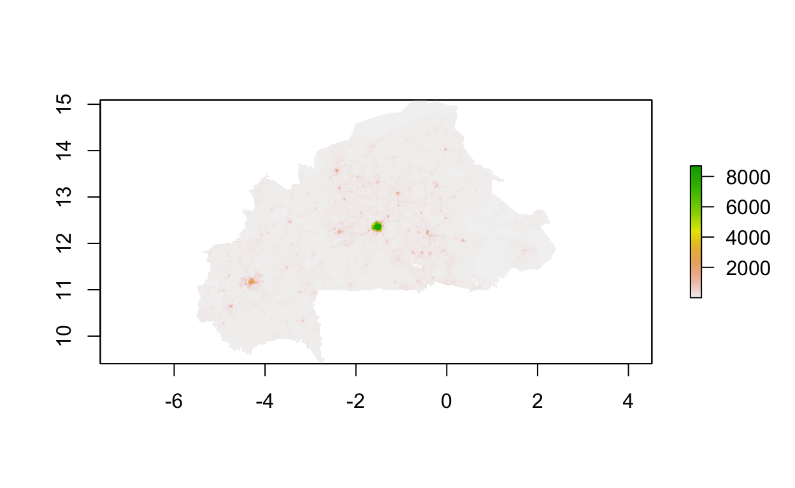
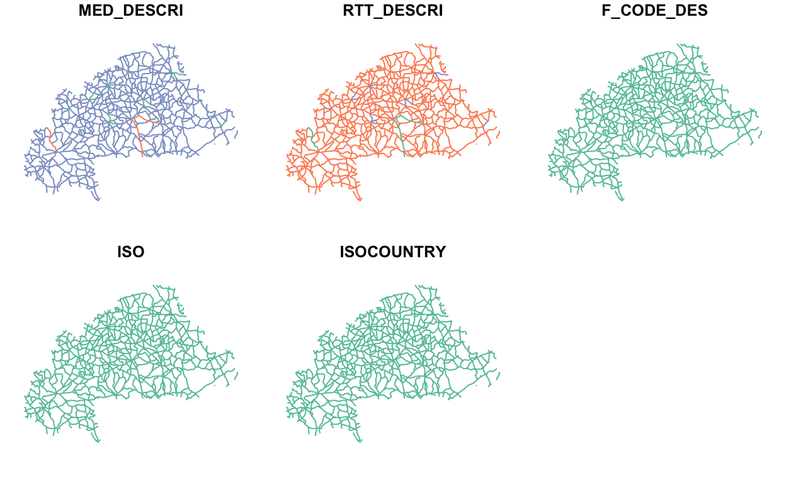
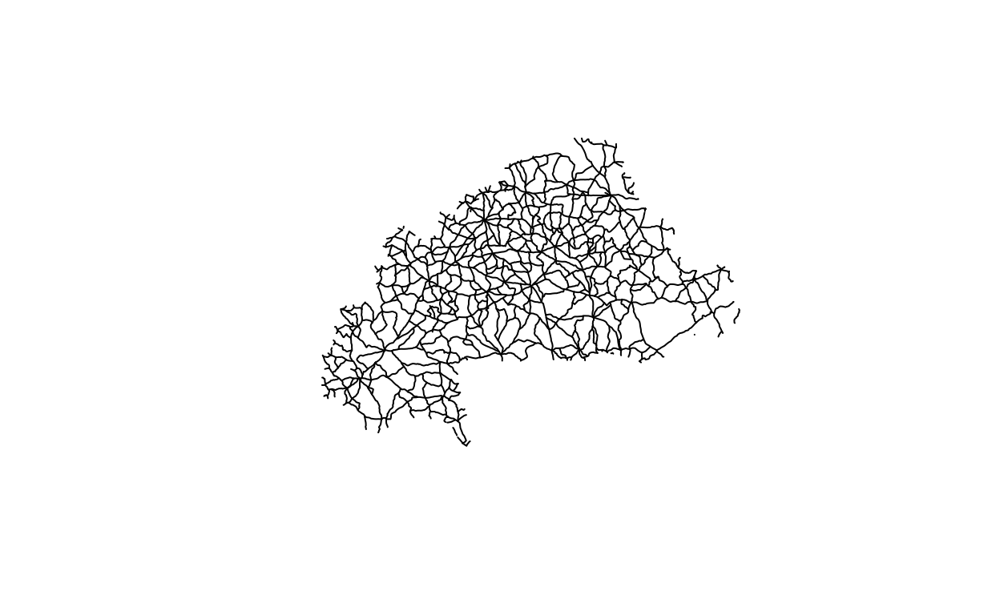
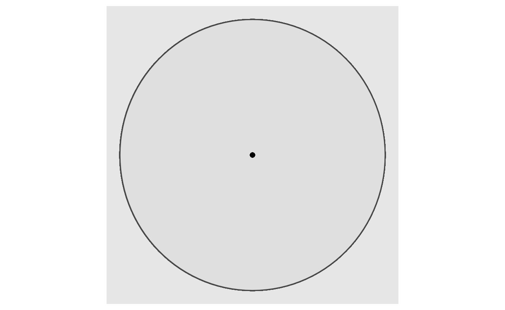
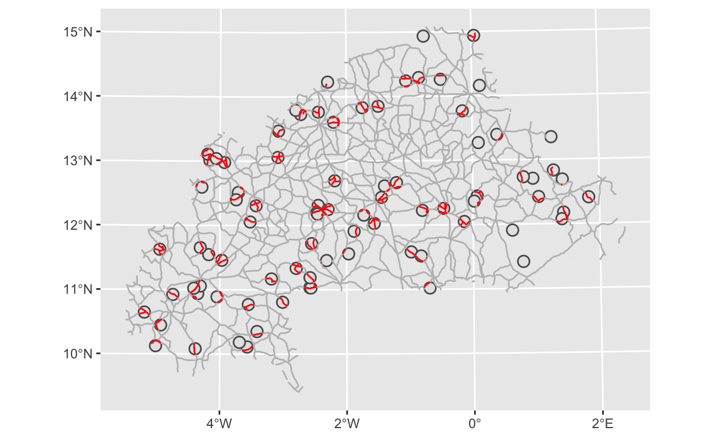

Our last post showed how to read, merge, and map the PMA GPS data - and how mapping can shed light on interesting spatial variation. A big advantage of the PMA GPS data is that you can also merge in other sources of spatial data, which opens up enormous opportunities for analyzing how contextual and environmental factors affect topics of interest in the PMA data. In this post, we’ll show how to merge in two different types of spatial data and construct variables of interest.
Data
We’ll be using toy PMA GPS data for this post. To use real PMA GPS data you must request access directly from our partners at pmadata.org. The toy data we’ll use here contains randomly sampled locations within Burkina Faso which have no actual relationship to the EAs in the PMA data. This means none of the interpretations of spatial patterns will hold, but all the code will run.
We will also be introducing two different spatial datasets that represent different kinds of spatial data. The first is population density data from WorldPop.1 If you want to download the data from the WorldPop site, we’re using the “Unconstrained individual countries 2000-2020 (1 km resolution)” data from 2017 for Burkina Faso. This is raster data, which means the data are stored as a grid of values which are rendered on a map as pixels. You can think of this as a matrix that is spatially referenced – that is each pixel represents a specific area of land on the Earth. Lots of spatial data are stored as rasters including climate data (e.g., temperature and rainfall), elevation, and satellite images. Note that the raster data is saved as a .tiff (which is a common way of storing raster data). The resolution of the raster maps to the area that each pixel represents in the real world. The population density is 1 km resolution, which means that each pixel represents a 1 km by 1 km square on the ground. The figure below shows the impact of different spatial resolutions for the same raster data.2
](images/raster-resolution.png)
Figure 1: Source: NEON
Population density is also conceptually important to the SDP data on contraceptive supply that we’ve been examining through this series of posts. Population density may provide a more nuanced characterization of urbanization than the URBAN variable. Additionally, density may be correlated with longer wait times at clinics, which may also impact contraceptive use at the individual level.
The second spatial dataset we’ll introduce is data on road networks in Burkina Faso from the Digital Chart of the World and made publicly available by DIVA-GIS, an excellent source for publicly available spatial datasets. Road networks serve as a proxy for accessibility to health clinics – an important component of the contraceptive service environment – that may be more nuanced than the binary urban/rural distinction. To download the road data, go to DIVA-GIS Data and select Burkina Faso from the Country dropdown and Roads from the Subject dropdown. The road data is called vector data and is stored in a shapefile (.shp). Vector data is used to represent real world features and are three basic types: points, lines, and polygons. The road data we’re using in this post is an example of vector line data.
Setup: Load packages and data
We’ll be using many of the packages from the last few posts, as well as a new package for specifically working with raster data – appropriately called raster – and one called units, which enables easy conversion between objects of different units. Make sure to install the raster and units packages first and then load everything we’ll be using today:
Let’s start by reading in the raster using raster::raster() and check out the meta-data.
pop_density <- raster("bfa_pd_2017_1km.tif")
pop_density
class : RasterLayer
dimensions : 682, 951, 648582 (nrow, ncol, ncell)
resolution : 0.008333333, 0.008333333 (x, y)
extent : -5.517917, 2.407083, 9.407917, 15.09125 (xmin, xmax, ymin, ymax)
crs : +proj=longlat +datum=WGS84 +no_defs
source : /Users/Matt/R/pma-data-hub/_posts/2021-02-04-merging-external-spatial-data/bfa_pd_2017_1km.tif
names : bfa_pd_2017_1km
values : 0.281988, 8820.016 (min, max)Because rasters are essentially just matrices, you can think of the dimensions in the same way. At a spatial resolution of 1 km, this raster covers all of Burkina Faso with 648,582 cells. The resolution describes the size of the cells (the length of one side of each square cell). You may be wondering why this is showing up as 0.00833 when the data has a spatial scale of 1 km by 1 km. This is because the units that the resolution is reported in depend on the coordinate reference system of the data. More on this in a moment.
The extent (or spatial extent) refers to the geographic area that the raster covers. The values are in the same coordinate reference system as the raster. The coordinate reference system or crs is the next piece of meta-data we have. “A coordinate reference system (CRS) is a coordinate-based local, regional or global system used to locate geographical entities.”3 The crs for this raster is +proj=longlat +datum=WGS84 +no_defs. The crs contains several pieces of information including the datum (WGS84) and the projection.4 The appropriate CRS to use for any given spatial task depends on what part of the world the data represent and what kind of spatial operations you’ll be performing. It’s really important to know what crs your data are in and make sure that all your spatial data are in the same crs if you use more than one kind. Otherwise, they won’t line up on a map and any spatial analysis or processing you do will be incorrect.
The projection of this raster data is described as longlat, which actually is not a projection. A projection refers to how the Earth’s surface is flattened so it can be represented as a 2-dimensional raster grid. These data use a geographic coordinate system, simply the raw latitude and longitude coordinates, rather than a projected coordinate system, which would transform the coordinates into a 2-dimensional plane. Latitude and longitude locate positions on the Earth using angles, so the spacing of each line of latitude as you move north or south along the Earth is not uniform. The units of this reference system are in degrees (of latitude and longitude), so the 0.00833 resolution we saw above is reporting the spatial resolution in degrees, rather than meters or kilometers. This crs is not ideal for measuring distances because the distance covered by a single degree of latitude or longitude varies greatly across the Earth’s surface. This also means that the stated 1 km resolution is only nominal. At the equator, 0.00833 degrees is approximately equal to 1 km, but this distance, and the ground area represented by each pixel, will vary. Fortunately, Burkina Faso is relatively close to the equator, so the pixels will be quite close to 1 km by 1 km.
The last piece of meta-data to look at are the values – this is reporting the minimum and maximum values across all of the cells. Because these are population density data, it can be interpreted as the number of people in each pixel divided by the area of each pixel (which we know is 1 km2)
Now that we’ve reviewed the raster attributes, let’s see what it looks like. We can use the basic plot function to do this.
plot(pop_density)

We can see three locations stand out in terms of population density. First is Ouagadougou the capital of Burkina Faso and largest city, right in the center. Then we can see higher density around Bobo Dioulasso and Banfora in the southwest of the country, which are the second and third largest cities in the country.
Next we’ll load the roads data using sf::st_read().
roads <- st_read("BFA_roads/BFA_roads.shp", quiet = TRUE)
roads
Simple feature collection with 1149 features and 5 fields
geometry type: MULTILINESTRING
dimension: XY
bbox: xmin: -5.482261 ymin: 9.407643 xmax: 2.393089 ymax: 15.08071
geographic CRS: WGS 84
First 10 features:
MED_DESCRI RTT_DESCRI F_CODE_DES ISO ISOCOUNTRY
1 Without Median Secondary Route Road BFA BURKINA FASO
2 Without Median Secondary Route Road BFA BURKINA FASO
3 Without Median Secondary Route Road BFA BURKINA FASO
4 Without Median Secondary Route Road BFA BURKINA FASO
5 Without Median Secondary Route Road BFA BURKINA FASO
6 Without Median Secondary Route Road BFA BURKINA FASO
7 Without Median Secondary Route Road BFA BURKINA FASO
8 Without Median Secondary Route Road BFA BURKINA FASO
9 Without Median Secondary Route Road BFA BURKINA FASO
10 Without Median Secondary Route Road BFA BURKINA FASO
geometry
1 MULTILINESTRING ((-0.720550...
2 MULTILINESTRING ((-0.583273...
3 MULTILINESTRING ((-0.397415...
4 MULTILINESTRING ((-0.142728...
5 MULTILINESTRING ((-0.403059...
6 MULTILINESTRING ((-0.171111...
7 MULTILINESTRING ((-0.116756...
8 MULTILINESTRING ((0.0672155...
9 MULTILINESTRING ((-1.245636...
10 MULTILINESTRING ((-1.50246 ...This sf object also contains meta-data (shown at the top). In terms of meta-data, the geometry type field tells us this data is a MULTILINESTRING object, which makes sense since these are roads. The bbox (short for bounding box), is the same information as the extent field for the raster data – it tells us the bounds of the geographic area that this spatial data covers. We see the geographic CRS which is the coordinate reference system of the data. For this roads dataset it is WGS84, which is the same as the population density raster data.
The roads data contains several variables: MED_DESCRI, RTT_DESCRI, F_CODE_DES, ISO, ISOCOUNTRY, and geometry. The first three variables provide some information about the types of roads in this data. ISO and ISOCOUNTRY simply provide country codes and names for the data. Finally, we see the geometry variable, which is the variable that contains the spatial information in an sf object.
We can also plot this roads data to see what it looks like.
plot(roads)

By calling the basic plot function, we get a panel of plots of the road network, with one plot for each variable. We can see some variation in color MED_DESCRI and RTT_DESCRI, indicating that there multiple values for those variables. If we wanted just a single plot of the road network, we can get that by calling plot on the geometry variable:
plot(roads$geometry)

Finally, we’ll load the “toy” GPS data and convert it to an sf object. The option crs = 4326 means that we are creating this with the WGS84 coordinate reference system because 4326 is the EPSG code for WGS84.
Population Density: working with raster data
We want to construct a variable that captures the population density at each enumeration area in the data. We’ll use sf::st_buffer() to do this, which will construct a buffer circle around each GPS point. The PMA GPS data are randomly displaced to protect the privacy of respondents, so it’s imperative to consider this displacement when working with the GPS data to do spatial operations. Because the maximum displacement distance is 10 km, if we construct buffers with a radius of 10 km we can be 100% confident that the true locations of each GPS point fall within that buffer.
buffers <- st_buffer(gps, dist = 10000)
Warning in st_buffer.sfc(st_geometry(x), dist, nQuadSegs, endCapStyle
= endCapStyle, : st_buffer does not correctly buffer longitude/
latitude datadist is assumed to be in decimal degrees (arc_degrees).ggplot() +
geom_sf(data = buffers) +
geom_sf(data = gps)

This giant circle is certainly not what we would expect! What’s going on here? Earlier in this post we mentioned that the WGS84 crs is a geographic coordinate system that simply uses the latitude and longitude coordinates to identify locations and the units are in degrees, rather than meters or kilometers. This circle thus has a radius of 10,000 degrees and since the Earth only spans 360 degrees it is fully covered by this circle. As we mentioned, the WGS84 crs is not ideal for measuring distances. R alerted us of this problem with two warnings: st_buffer does not correctly buffer longitude/latitude data and dist is assumed to be in decimal degrees (arc_degrees). This is why it’s so important to pay attention to the crs of your data.
To properly construct a buffer circle around these GPS points, we need to transform the data to a different projection that uses meters or kilometers. And, because it’s essential that all of our data are in the same crs, we need to transform or reproject everything. For vector data, we can do this using sf::st_transform() and for raster data we’ll do this with raster::projectRaster(). For the transformation, we’re using a crs that is projected to meters and is appropriate to the local geography of Burkina Faso. You can read about it on the epsg.io site. After reprojecting, we’ll calculate the buffer again and plot it to make sure this looks right.
# transform the GPS data
gps_tr <- gps %>% st_transform(crs = 32630)
gps_tr
Simple feature collection with 83 features and 5 fields
geometry type: POINT
dimension: XY
bbox: xmin: 260943.3 ymin: 1114669 xmax: 1025472 ymax: 1653511
projected CRS: WGS 84 / UTM zone 30N
# A tibble: 83 x 6
PMACC PMAYEAR REGION EAID DATUM geometry
* <chr> <dbl> <chr> <dbl> <chr> <POINT [m]>
1 BF 2017 5. centre-nord 7610 WGS84 (837531.4 1567675)
2 BF 2017 1. boucle-du-mouhoun 7820 WGS84 (491871.7 1488848)
3 BF 2017 3. centre 7271 WGS84 (982414 1349907)
4 BF 2017 3. centre 7799 WGS84 (739431 1352652)
5 BF 2017 8. est 7243 WGS84 (545866.2 1219668)
6 BF 2017 6. centre-ouest 7026 WGS84 (352638.7 1209502)
7 BF 2017 3. centre 7859 WGS84 (833822.1 1377527)
8 BF 2017 3. centre 7725 WGS84 (980025.8 1406727)
9 BF 2017 6. centre-ouest 7390 WGS84 (439876.7 1190609)
10 BF 2017 11. plateau-central 7104 WGS84 (835483.2 1469280)
# … with 73 more rows# reproject the raster data
pop_density_tr <- projectRaster(
pop_density,
crs = "+proj=utm +zone=30 +datum=WGS84 +units=m +no_defs"
)
pop_density_tr
class : RasterLayer
dimensions : 699, 970, 678030 (nrow, ncol, ncell)
resolution : 907, 922 (x, y)
extent : 218942.9, 1098733, 1035714, 1680192 (xmin, xmax, ymin, ymax)
crs : +proj=utm +zone=30 +datum=WGS84 +units=m +no_defs
source : memory
names : bfa_pd_2017_1km
values : 0.9709167, 8775.492 (min, max)# calculate 10 km (10,000 meter) buffer circles
buffers_tr <- st_buffer(gps_tr, dist = 10000) # because the units are in meters
# plot
ggplot() +
geom_sf(data = buffers_tr) +
geom_sf(data = gps_tr, color = "red")

Looking at the meta-data for both the gps_tr and raster_tr objects, we can see they have the same new projected crs: UTM zone 30N. The raster_tr meta-data also includes information on the units (+units=m) confirming that distances are measured in meters. Turning to the plot, we can see the GPS coordinates marked in red and each has a circle around it.
Now that we have correctly estimated 10 km buffer circles, we can calculate the average population density within each buffer using the raster::extract() command and specifying fun = mean. This produces an 83 x 1 vector of results, which means we have one population density value for each enumeration area. Printing the first 5 results shows there is some substantial variation in population density.
buffer_density <- raster::extract(
pop_density_tr,
buffers_tr,
fun = mean,
na.rm = TRUE,
cellnumbers = TRUE
)
dim(buffer_density)
[1] 83 1head(buffer_density)
[,1]
[1,] 35.58080
[2,] 21.36878
[3,] 17.56161
[4,] 113.36298
[5,] 31.73017
[6,] 57.09591Note, that we don’t actually need to create the buffers first to extract the mean values of the raster. We can do it all in one step, shown below. Just make sure to use the gps_tr object instead of the buffer_tr object! But, we’ll use those buffers again with the road data.
buffer_density_alt <- raster::extract(
pop_density_tr, gps_tr,
buffer = 10000,
fun = mean,
na.rm = TRUE
)
head(buffer_density_alt)
[1] 35.58080 21.36878 17.56161 113.21781 31.73017 57.09591Finally, so we can merge everything together by EAID, let’s add the population density calculation directly to the gps_tr data. Note that the raster::extract() command preserves the order of the inputs, so we know the first row of the density calculation corresponds to the first row of the gps_tr data.
gps_tr$pop_density <- raster::extract(
pop_density_tr, gps_tr,
buffer = 10000,
fun = mean, na.rm = TRUE
)
Road Networks: Working with vector data
Before we do anything with the road data, let’s make sure to reproject it to match the rest of our data.
roads_tr <- roads %>%
st_transform(crs = 32630)
Because enumeration areas with better access to roads may make it easier for women to reach local service delivery providers. We are going to calculate the total length of roads within each buffer as a proxy for this accessibility. Because each of these buffers was constructed with the same 10 km radius, they have the same area, which means the sum of road length can also be thought of as a road density measure.
First, we need to identify which portions of the road fall into each buffer. We’ll use sf::st_intersection(), which returns a new sf object that contains observations from the first argument that touch (geographically) the second argument.
int <- st_intersection(roads_tr, buffers_tr)
int
Simple feature collection with 238 features and 10 fields
geometry type: LINESTRING
dimension: XY
bbox: xmin: 251238.7 ymin: 1104708 xmax: 1033002 ymax: 1658158
projected CRS: WGS 84 / UTM zone 30N
First 10 features:
MED_DESCRI RTT_DESCRI F_CODE_DES ISO ISOCOUNTRY PMACC
240 Without Median Secondary Route Road BFA BURKINA FASO BF
241 Without Median Secondary Route Road BFA BURKINA FASO BF
268 Without Median Secondary Route Road BFA BURKINA FASO BF
711 Without Median Secondary Route Road BFA BURKINA FASO BF
640 With Median Primary Route Road BFA BURKINA FASO BF
649 With Median Primary Route Road BFA BURKINA FASO BF
728 Without Median Secondary Route Road BFA BURKINA FASO BF
958 Without Median Secondary Route Road BFA BURKINA FASO BF
959 Without Median Secondary Route Road BFA BURKINA FASO BF
964 Without Median Secondary Route Road BFA BURKINA FASO BF
PMAYEAR REGION EAID DATUM
240 2017 1. boucle-du-mouhoun 7820 WGS84
241 2017 1. boucle-du-mouhoun 7820 WGS84
268 2017 1. boucle-du-mouhoun 7820 WGS84
711 2017 3. centre 7271 WGS84
640 2017 3. centre 7799 WGS84
649 2017 3. centre 7799 WGS84
728 2017 3. centre 7799 WGS84
958 2017 8. est 7243 WGS84
959 2017 8. est 7243 WGS84
964 2017 8. est 7243 WGS84
geometry
240 LINESTRING (501051.3 149280...
241 LINESTRING (481961.6 149016...
268 LINESTRING (489661.7 148171...
711 LINESTRING (981157 1359825,...
640 LINESTRING (732417.5 135977...
649 LINESTRING (746990.9 135527...
728 LINESTRING (746990.9 135527...
958 LINESTRING (553191.7 122647...
959 LINESTRING (554462.3 122043...
964 LINESTRING (535888.5 122030...The returned object (int) is a data.frame with 238 observations (far fewer than the original 1149 in the roads_tr data). Note that it also contains all the variables from both roads_tr and buffers_tr, so this operates a bit like an inner_join, which means it only includes observations that are in both datasets. We can see the implications of this by making a quick map. The full road network is shown in gray, the buffer circles are in black and the roads that fall into the circles are highlighted in red. Based on this map, it looks like there are a few buffer circles that don’t contain any roads. We want to be sure we account for this.
# plot intersection with buffers and road networks
ggplot() +
geom_sf(data = buffers_tr) +
geom_sf(data = roads_tr, color = "grey") +
geom_sf(data = int, color = "red")

We can merge in the full list of EAIDs to make sure we don’t miss this one (or any others) using sf:st_join(), which works like dplyr::left_join(). It’s important that when we do the join, the first argument is int, so that it will retain the LINESTRING geometry from this dataset, which we need to calculate the road length. Then, we’ll calculate the length of the road networks contained in each buffer. We can do this with sf::st_length(). Because many of the buffer circles contain multiple roads, we first need calculate the length of each road then we need to aggregate to get the length of all roads in a given enumeration area. We’ll convert from meters to km for greater readability. It’s important to note that any EAs with buffers that don’t contain any roads will not be in the int dataset, so we’ll do a dplyr::full_join() with gps_tr to make sure we get them all.
Because int and gps_tr are both sf objects, it’s not possible to do a standard join – you can only use sf::join() when you have two sf objects. That’s why we convert both to data.frames for the dplyr::full_join() and then back into an sf object. Finally, we’ll convert int back into an sf object, retaining the POINT geometry from gps_tr, and replace all NA road lengths as 0.
# join, calculate length, & summarize
int <- int %>%
mutate(road_length = st_length(geometry)) %>%
group_by(EAID) %>%
summarise(road_length = sum(road_length, na.rm = T)) %>%
mutate(road_length = set_units(road_length, "km")) %>%
as.data.frame() %>%
full_join(as.data.frame(gps_tr), by = "EAID") %>%
st_sf(sf_column_name = 'geometry.y') %>%
dplyr::select(-geometry.x) %>%
mutate(road_length = ifelse(is.na(road_length), 0, road_length))
int
Simple feature collection with 83 features and 7 fields
geometry type: POINT
dimension: XY
bbox: xmin: 260943.3 ymin: 1114669 xmax: 1025472 ymax: 1653511
projected CRS: WGS 84 / UTM zone 30N
First 10 features:
EAID road_length PMACC PMAYEAR REGION DATUM
1 7003 22.41682 BF 2017 5. centre-nord WGS84
2 7006 13.35579 BF 2017 5. centre-nord WGS84
3 7009 20.45756 BF 2017 8. est WGS84
4 7016 20.31970 BF 2017 1. boucle-du-mouhoun WGS84
5 7026 18.99583 BF 2017 6. centre-ouest WGS84
6 7042 14.52567 BF 2017 8. est WGS84
7 7048 24.29931 BF 2017 4. centre-est WGS84
8 7056 15.21114 BF 2017 9. hauts-bassins WGS84
9 7082 44.15771 BF 2017 2. cascades WGS84
10 7092 26.30945 BF 2017 7. centre-sud WGS84
pop_density geometry.y
1 29.55058 POINT (422741.8 1383385)
2 29.98035 POINT (371721.6 1276582)
3 37.77861 POINT (348264.9 1114669)
4 154.07399 POINT (346019.4 1218739)
5 57.09591 POINT (352638.7 1209502)
6 63.08637 POINT (752580.5 1219236)
7 74.19692 POINT (479619.4 1234717)
8 35.07390 POINT (359915.1 1392593)
9 2731.76393 POINT (669089.2 1375002)
10 152.23504 POINT (559070.9 1346179)The added benefit of the full_join() with gps_tr is that it brings in the pop_density variable we created earlier. So now everything is in one dataset!
This can now be merged into other PMA data, such as the individual level dataset bf_merged we worked with in the other posts in this module, and the variables can be used for analysis!
As always, let us know if you have any questions and if you’re doing anything exciting with the PMA spatial data!
Special thanks to Tracy Kugler, Nicholas Nagle, and Jonathan Schroeder for excellent help with this post.
Linard, C., Gilbert, M., Snow, R. W., Noor, A. M., & Tatem, A. J. (2012). Population distribution, settlement patterns and accessibility across Africa in 2010. PloS one, 7(2), e31743.↩︎
NEON: https://www.neonscience.org/resources/learning-hub/tutorials/raster-res-extent-pixels-r↩︎
Wikipedia↩︎
https://www.earthdatascience.org/courses/earth-analytics/spatial-data-r/intro-to-coordinate-reference-systems/↩︎